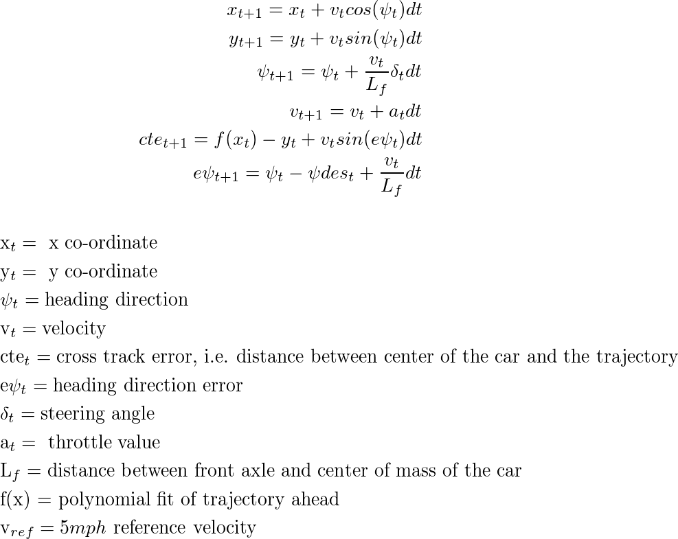
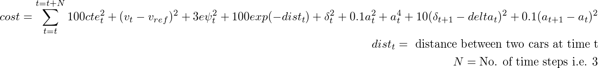

MPC - Collision Avoidance using Motion Capture

In this demo, I have used Model Predictive Controller to avoid a head-on collision for cars trying to swap their position following their given input trajectories. State information is captured using optitrack motion capture system. Motion capture data is subscribed by the controller at 10 Hz using ROS communication stack. The output of the controller i.e. steering angle and throttle values are published to speed controller (VESC) using ROS. The controller runs at 10 Hz. The dynamics of the car is reduced to the simple kinematic bicycle model which is represented by the equations below. The model predictive control problem is solved using the Interior Point Optimization (Ipopt) method.

The function f(x) is a 3rd-degree polynomial fit function of the curve from the current location of the car to the goal location using the trajectory information.
The cost function is chosen in such a way that it tries to minimize cross track error, sequential actuation, and use of actuators.

Location of the second car is predicted for the next time steps using its current location and velocity information assuming the acceleration is for it zero.
Check out the GitHub repo of the demo here.
In the first video below, the car tries to avoid the stationary car in its way to reach the goal. The input trajectory is a straight line from its initial location towards the camera passing through the stationary car.

For better visualization, only one car is using collision avoidance MPC. In the second video below, the car (i.e. car-1) which is away from the screen has collision avoidance MPC. And the other car (i.e. car-2) moves only in a straight line. It can be observed in the video that car-1 successfully avoid the collision.